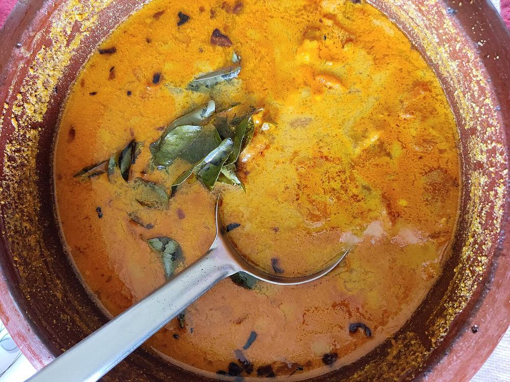

Machhli ka Jhor
river fish simmered in a thin, fiery mustard-oil gravy sharpened with ground mustard seed

Contains: fish, mustard
Checked against the ingredient list for ten allergens: milk, egg, fish, crustaceans, tree nuts, peanuts, sesame, mustard, soy and gluten. Brands vary, so read the label on anything new to you.
Ingredients
Quantities for 4.
- 700g rohu or katla, cut into 2cm steaks on the bone Fishany firm freshwater fish on the bone; boneless fillets fall apart in this gravy
- 7 tbsp Mustard Oilnot negotiable here. The pungency is the dish
- 2 tsp, ground to a paste with 2 green chillies and a splash of water Mustard Seeds
- 1 large, ground to a paste Onion
- 1 tbsp paste Garlic
- 1 tbsp paste Ginger
- 2 medium, finely chopped Tomato
- 2 tsp in total Turmeric
- 1 tsp Chilli Powder
- 1 tsp Kashmiri Chillifor colour without extra heatoptional
- 2 tsp Coriander Powder
- 1 tsp Cumin Seeds
- 1/2 tsp Nigellaoptional
- 4, slit Green Chilli
- 3 tbsp, chopped Coriander Leavesoptional
- to taste Salt
- 500ml Water
Cookware
kadhai, stovetop
Before you start
- Rub the fish steaks with 1 tsp turmeric and 1 tsp salt then cover and refrigerate 15 minutes. This firms the flesh so it survives frying.
- Grind the mustard seeds with green chilli and a little water and use the paste within the hour. Mustard turns bitter if it sits ground and warm.
- Pat the fish completely dry before it goes into the oil, or it will spit and stick.
Method
- Heat 5 tbsp mustard oil in a kadhai until it smokes and the sharp smell dies down, then lower the heat.Mustard oil must be taken to smoking point first; used raw it tastes bitter and thin.
- Fry the fish steaks in batches, 2 minutes a side, until the surface is set and pale gold. Lift out and set aside.Do not move the fish for the first two minutes. It releases from the pan by itself once a crust forms.
- In the same oil add the remaining 2 tbsp, then crackle the cumin seeds and nigella for 20 seconds.
- Add the onion paste and fry 8-10 minutes over medium heat until it loses its raw smell and turns light brown at the edges.
- Stir in the ginger and garlic pastes and cook 2 minutes, until the oil starts to bead at the sides.
- Add the chopped tomato and cook 6 minutes, mashing it down, until it collapses completely.
- Mix the remaining 1 tsp turmeric, the chilli powder, kashmiri chilli and coriander powder with 3 tbsp water and fry this paste for 3-4 minutes until the oil separates and floats clear.
- Stir in the ground mustard paste and cook exactly 1 minute, no longer.Mustard paste goes bitter if fried hard or long. One minute over low heat is all it needs.
- Pour in 500ml water with the slit green chillies and 1 tsp salt and bring to a boil. The gravy should be thin, like a light broth.
- Slide the fried fish back in, lower the heat and simmer uncovered 8-10 minutes, spooning gravy over the pieces rather than stirring.Never stir a fish curry with a spoon; tilt and swirl the pan or the steaks break up.
- Rest 5 minutes off the heat, scatter with coriander leaves and serve with plain rice.
Storage
Keeps 2 days refrigerated and the flavour deepens overnight. Reheat gently over low heat without stirring, adding a little hot water if the gravy has tightened. Do not freeze. The fish goes woolly.
Nutrition Good estimate
High protein: 38 g a serving, 33% of the calories
| Per serving328 g | Per 100 g | |
|---|---|---|
| Calories | 461 kcal | 141 kcal |
| Protein | 38.1 g | 12 g |
| Carbohydrate | 11.7 g | 4 g |
| of which sugars | 3.9 g | 1 g |
| Fibre | 3.3 g | 1 g |
| Fat | 29.3 g | 9 g |
| of which saturated | 3.6 g | 1 g |
| of which unsaturated | 22.8 g | 7 g |
Worked out from the listed quantities; most of the ingredient list could be weighed. Estimated from raw ingredients using USDA FoodData Central. Cooking changes are not modelled, and added salt is excluded, so sodium is not given.
Written and checked against sources, not cooked in a test kitchen. Times, yields, allergens and nutrition are worked out rather than measured, so use your own judgement on doneness and on storing. More in About.